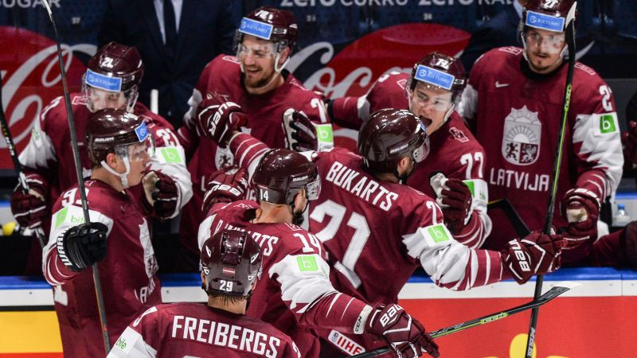
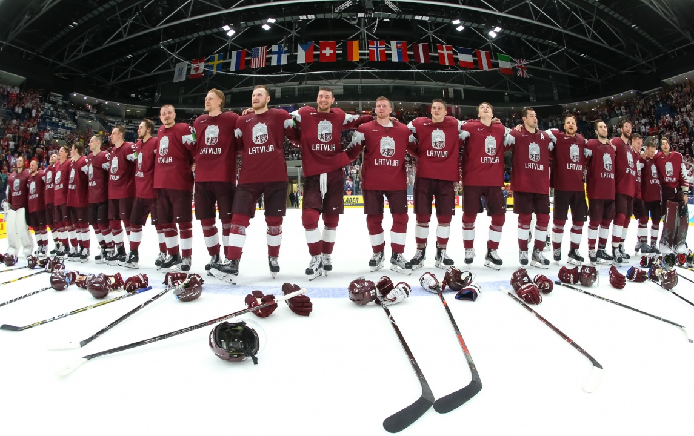
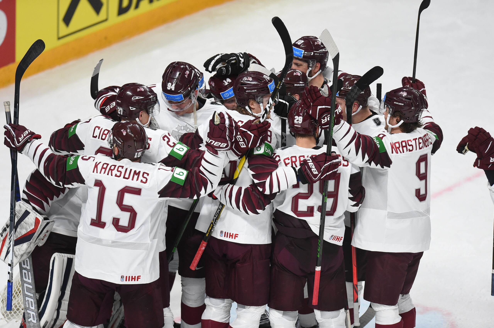

Hokejs Latvijā
Pirmā hokeja spēle Latvijā tika aizvadīta 1909. gada 15. februārī. Toreiz Rīgas "Unions" ar 4:3 pārspēja Strēlnieku dārza (Schutzengarten) komandu. Arī turpmākajos gados Latvijā tika aizvadītas atsevišķas hokeja spēles, taču popularitātes ziņā ievērojamāks bija bendijs.
1929.-1930. gada ziemā notika pirmā neoficiālā Latvijas čempionāta izspēle. Nākamajā ziemā norisinājās jau pirmais oficiālais čempionāts, uzvaru tajā izcīnot Rīgas "Unions" vienība. 1930. gados Latvija piedalījās vairākos pasaules čempionātos un arī 1936. gada olimpiskajās spēlēs, tikmēr Latvijas līgā dominēja ASK Rīgas un US Rīgas klubi.
Pirmajā Latvijas hokeja izlases spēlē, kas notika 1932. gada 27. februārī Rīgā, Latvijas izlase ar 3-0 pārspēja Lietuvas izlasi. Pirmo vārtu autors bija Indriķis Reinbahs.1991. gadā, pēc neatkarības atgūšanas, Latvija atkal tika uzņemta IIHF (Starptautiskā Hokeja Federācija) un kā jauna izlase pievienota Pasaules čempionāta C divīzijai.
1994. gadā Latvija pirmo reizi spēlēja B divīzijā, bet kopš 1997. gada Latvijas izlase cīnās spēcīgākajā - A divīzijā. 1997. un 2004. gadā Latvijas izlase izcīnīja 7. vietu, kas ir pagaidām augstākais sasniegums Pasaules čempionātos. Latvija piedalījās arī 2002.,2006., 2010., 2014., un 2022. gada olimpiskajās spēlēs.
2006. un 2021. gada Pasaules čempionāts hokejā notika Rīgā, Latvijā.NHL čempiona titulu - Stenlija kausu līdz šim ir izcīnījis tikai Sandis Ozoliņš, tas viņam izdevās 1995./1996. sezonā, spēlējot Kolorādo "Avalanche". Šogad aktīvo hokejistu skaits Latvijā ir ļoti pieaudzis ņemot vērā pēdējo 10 gadu salīdzinājumu. Kā arī jau aktīvi, 90 gadus turpinās Latvija čempionāts hokejā, kas tagad pārsaukts par Optibet Hokeja līgu. Pašreizējie čempioni, Zemgale LLU kā arī HS Rīga komandas bāzētas uz jauno hokejistu attīstību un gatavību vēl augstākām pasaules līgām.
(avots- Vikipedija)


